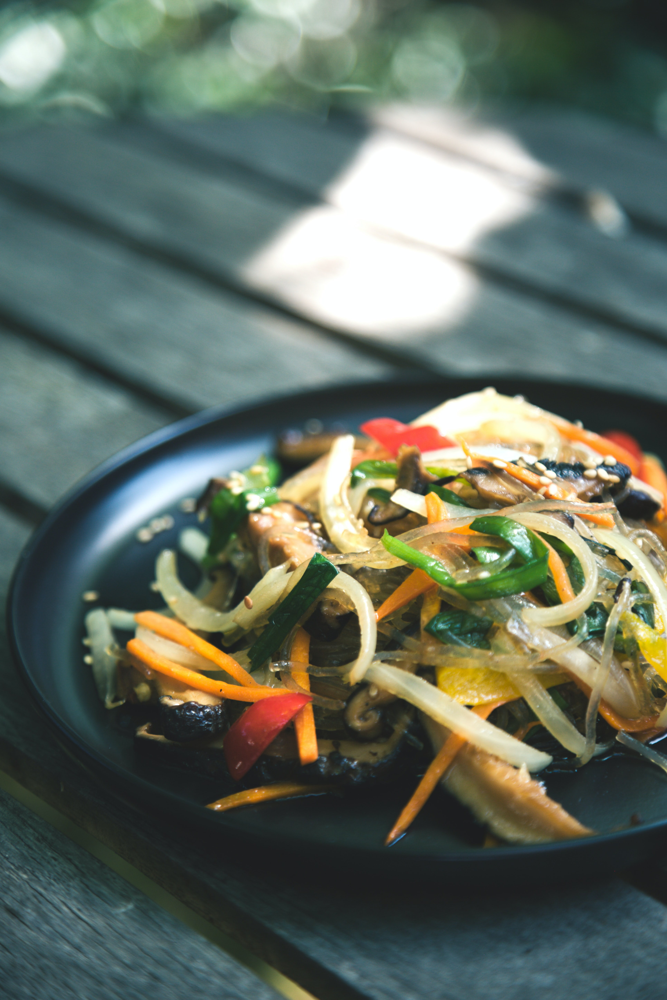

2.Japchae
Often served as a side dish during lunch or dinner, japchae is a traditional
Korean noodle dish made up of stir-fried sweet potato, thinly shredded vegetables,
beef, and a hint of soy sauce and sugar. Depending on the chef, additional i
ngredients like mushrooms are added to the mix. Japchae is known for its sweet
and flavorful taste and its soft yet slightly chewy texture.
